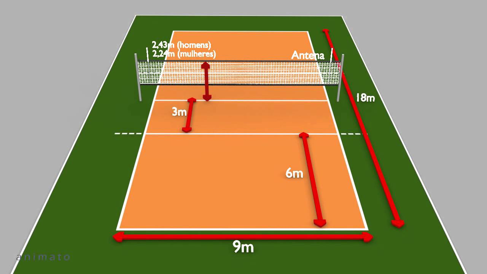

Vôlei
O voleibol ou vôlei é um esporte praticado entre duas equipes numa quadra
retangular (aberta ou fechada). Ela é dividida por uma rede colocada verticalmente sobre a linha central.

Regras do voleibol.
- Cada equipe possui um técnico;
- Uma partida é constituída de 5 sets;
- Cada set tem um máximo de 25 pontos com uma diferença mínima de 2 pontos;
- Em caso de empate no set no final (24 x 24), a partida continua até que a dife-
rença de dois pontos seja atingida (26 x 24, 27 x 25, etc.);
- Após o saque, a equipe só pode tocar três vezes na bola;
- Ganha a equipe que vencer três sets;
- Se houver empate nos sets (2x2) o 5º set será decisivo.O vôlei de quadra é
- É formado por duas equipes com 6 jogadores em cada. No total, são 12 jogadores.
Existem ainda 6 jogadores reserva.
Volei de areia
Além do vôlei de quadra, há também o vôlei de praia. Diferente da quadra, o de
praia é jogado na areia e contém somente quatro jogadores, sendo dois de cada
equipe.

Quando se comete faltas no vôlei
As regras do voleibol incluem diversas faltas no saque, ataque, passe de bola, toques, posição, rotação de jogadores, dentre outros. Alguns exemplos de falta são:
- Dois Toques: quando um jogador toca a bola duas vezes consecutivas ou a bola bate em várias partes de seu corpo.
- Quatro Toques: quando a equipe toca na bola quatro vezes antes de enviá-la aos adversários.
- Toque apoiado: quando um jogador se apoia em outro da sua equipe. Também é considerado falta se ele se apoia em alguma estrutura ou objeto dentro da área de jogo para golpear a bola.
- Rotação: se a rotação entre os jogadores não acontecer de maneira correta na hora do saque, a equipe comete falta.
- Rede: se jogar a bola entre o espaço das duas antenas próximas da rede, o jogador cometerá falta.
Fundamentos do volei
- Saque
- Recepção
- Levantamento
- Ataque
- Bloqueio
Cada jogada do vôlei tem início com os saques. O sacador, como é chamado o jogador que lança a bola, tem que arremessar a bola por cima da rede e dentro da quadra de seu adversário.
Se ele ultrapassar o limite, a bola vai retornar para seu adversário sacar. Note que quando a bola toca no chão do time adversário, ocorre a marcação de pontos.
A chamada “zona de saque” representa o local onde o jogador (sacador) deve permanecer para lançar a bola. Trata-se de uma área de 9 metros de largura situada após cada linha de fundo.